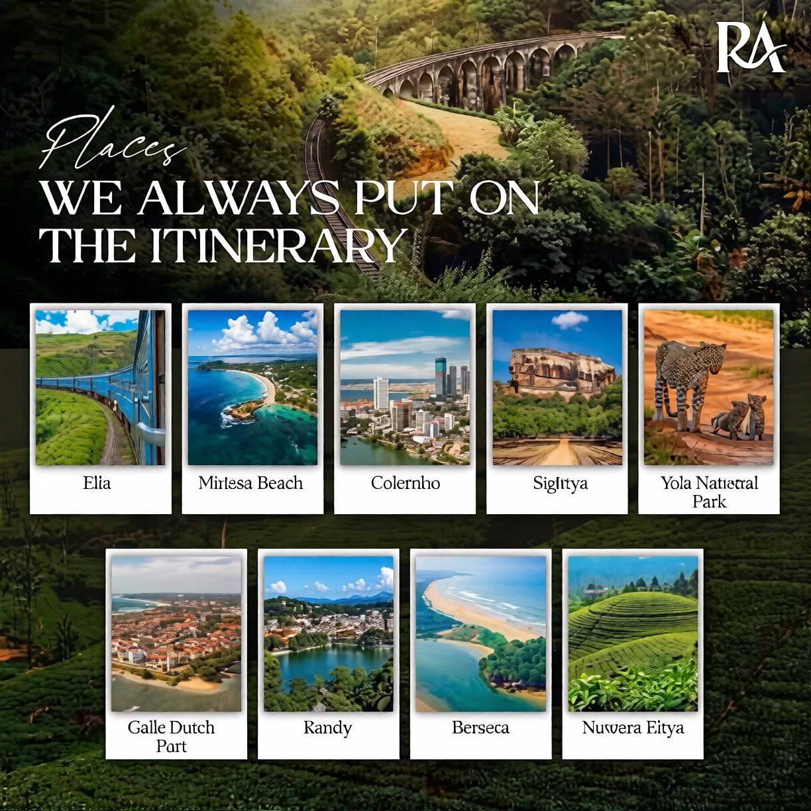
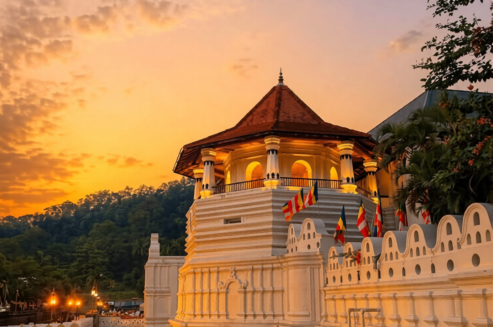
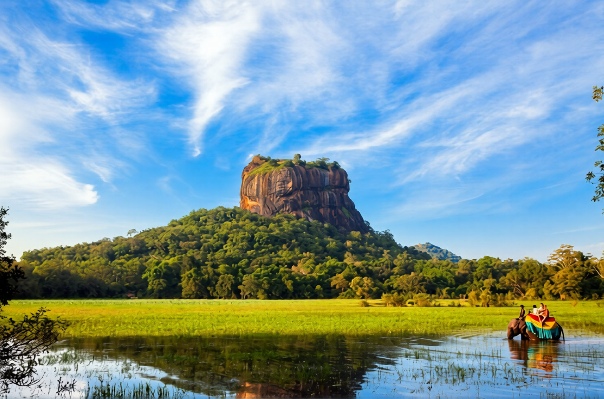
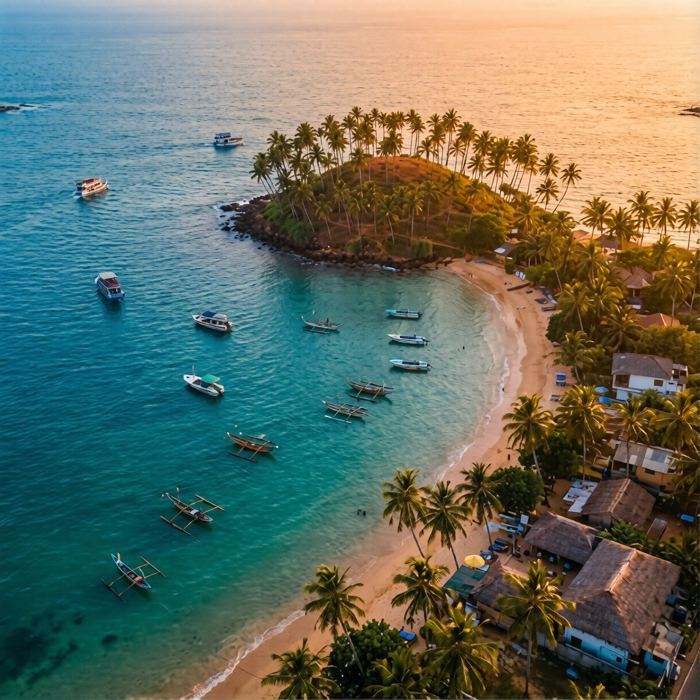

Kandy is the cultural and spiritual capital of Sri Lanka, located in the central hills of the island at an elevation of about 500 meters. Surrounded by lush green mountain ranges and built around a scenic 19th-century artificial lake, the city enjoys a cooler climate than the coastal plains. It serves as the second-largest city in the country and a vital regional hub for education, healthcare, and commerce.
Historically, Kandy holds deep significance as the last capital of the Sinhalese monarchy, which fiercely resisted Portuguese, Dutch, and British colonial powers before falling to the British in 1815. As a designated UNESCO World Heritage Site, the city is world-renowned for housing the Sri Dalada Maligawa (Temple of the Tooth Relic), which preserves a sacred tooth relic of the Buddha.
Each summer, Kandy comes alive during the grand Kandy Esala Perahera, a dazzling multi-day festival featuring traditional dancers, drummers, fire-wielders, and richly decorated ceremonial elephants. Beyond its royal and religious landmarks, the area is surrounded by tea estates, spice plantations, and natural reserves like the Knuckles Mountain Range, blending rich heritage with the natural beauty of Sri Lanka's central highlands.

Sigiriya, also known as Lion Rock, is a dramatic 5th-century rock fortress and UNESCO World Heritage Site located in the Central Province of Sri Lanka. Rising roughly 200 meters above the surrounding green plains, this massive granite column was transformed into a royal capital and sky citadel. King Kasyapa built the fortress in 477 CE after seizing the throne, turning the towering natural wonder into a heavily defended palace designed to protect against rival claims.
gardens, and terraced landscapes that once featured an intricate hydraulic system supplying water to the upper levels. Midway up the rock, vibrant 5th-century frescoes of celestial figures adorn a sheltered pocket, while the polished masonry of the Mirror Wall still carries ancient Sinhala poetry and visitor graffiti from centuries past.
At the northern terrace, the massive carved paws of a colossal stone lion once framed the final ascent to the summit. Though the head and upper body of the lion structure have weathered away over time, the remaining paws give the site its name—Sinhagiri, or Lion Rock. At the top, the flat summit reveals the foundational ruins of the upper palace, cisterns, and panoramic views of the dense forests and distant hills below.

Mirissa is a vibrant coastal town on the southern coast of Sri Lanka, located in the Matara District of the Southern Province, about 150 kilometers south of Colombo. Historically rooted as a traditional fishing port specializing in tuna, snapper, and butterfish, the town has grown into one of the island's most beloved tropical destinations. It features a compact, walkable layout with a laid-back, youthful energy that blends local maritime heritage with a thriving cafe and beach-shack culture.
The main attraction of Mirissa is its stunning coastline, which is framed by soft golden sand, gentle swimming bays, and surf-friendly breaks. Iconic local landmarks draw travelers from around the world, including Coconut Tree Hill, a scenic, palm-topped promontory overlooking the ocean, and Parrot Rock, a small rocky island just off the shore that can be climbed at low tide for panoramic views. Visitors can also track down the secluded Secret Beach, a quiet cove tucked away behind the main bay featuring calm, clear-water wading areas.
From November through April, Mirissa transforms into a premier global hub for marine life, most famously known for whale and dolphin watching excursions that depart from the local harbor to spot blue whales, sperm whales, and spinner dolphins. As evening falls, the beach comes alive as restaurants set out tables directly on the sand, offering fresh grilled seafood and cocktails under the stars.

Yala National Park, located in the dry southeastern corner of Sri Lanka, is the island's most famous and second-largest wildlife reserve. Spanning over 130,000 hectares across multiple protected blocks, the park features a striking mix of dense scrub forests, grassy plains, freshwater waterholes, and coastal lagoons that meet the Indian Ocean. Established initially as a wildlife sanctuary in 1900 and later a national park in 1938, it serves as a critical refuge for the island's unique dry-zone ecosystems.
The park is globally renowned for having one of the highest densities of wild leopards (Panthera pardus kotiya) in the world, making it a premier destination for big-cat sightings. Beyond its famous leopards, Yala's diverse habitats support herds of Asian elephants, sloth bears, wild water buffalo, sambar deer, and marsh crocodiles. It is also a paradise for birdwatchers, home to over 215 bird species, including vibrant resident peacocks, painted storks, and various seasonal migrants.
In addition to its rich wildlife, Yala holds deep historical and cultural significance. The park's boundaries encompass ancient ruins and sacred religious sites, including the 2,000-year-old Sithulpawwa rock monastery and the Magul Maha Vihara, which date back to the ancient Ruhuna kingdom. Accessible primarily through guided 4x4 jeep safaris, Yala offers visitors an unforgettable journey into raw wilderness where nature and ancient heritage closely intersect.